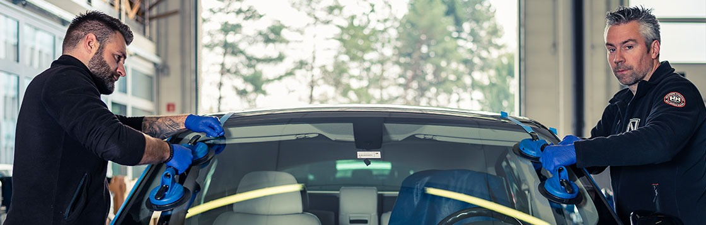
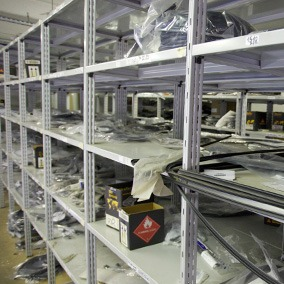

Ko avtosteklo poči, do Novomata skoči.
- Popravilo stekla brez naročanja v 1 uri
- Hitra vgradnja oziroma zamenjava stekla
- Cenitev škode in dokumentacijo z zavarovalnico uredimo mi

Specialisti menjav po vsej Sloveniji.
Ljubljana, Maribor, Celje, Koper in Murska Sobota. Mobilna enota pride tudi do vas.
Popravilo ali menjava?
Steklo vedno najprej ocenimo. Če ga je mogoče popraviti, vam prihranimo čas in denar.
Vetrobransko steklo podpira streho vašega vozila in predstavlja od 20 do 40 odstotkov trdnosti avtomobila. Zato je način vgradnje tako pomemben.
Varnost
Ob trčenju se zračna blazina izstreli ob vetrobransko steklo. Zato mora biti steklo vgrajeno strokovno, da v vozilu ostane.
Kakovost
Vsa stekla so homologirana in ustrezajo evropskim standardom. Uporabljamo le lepila in materiale vrhunskih proizvajalcev.
Spremljanje novosti
Redno se posvetujemo s proizvajalci materialov in orodij, zato naši monterji poznajo nove tehnike in standarde.
Vse za vaše avtosteklo na enem mestu.
Popravimo, zamenjamo ali prodamo steklo za skoraj vsako vozilo. V poslovalnici ali kar na vaši lokaciji.
Menjava stekel
Ko poškodbe ni več mogoče popraviti. Vsaka menjava poteka po 15 točkah varne menjave, z garancijo na tesnjenje.
Več o menjaviPopravilo stekel
Končano v približno uri in pol. Trajno, poškodba se ne širi več.
Več o popravilu
Prodaja avto stekel
Več tisoč stekel na zalogi v Ljubljani in Mariboru, za vse znamke in modele.
Poiščite stekloMobilni servis
Sporočite nam kraj in čas. Naši serviserji steklo popravijo ali zamenjajo kar na terenu, po vsej Sloveniji.
Naročite mobilni servisUradne cenitve škod
Sodelujemo z večino slovenskih zavarovalnic. Obisk zavarovalnice vam prihranimo.
Kako poteka cenitev15 točk varne menjave.
Vaša varnost je naša prva skrb. Vsaka menjava vetrobranskega stekla poteka po istem varnostnem načrtu.
- Preučitev stanja vozila pred menjavo stekla.
- Zaščita notranjosti vozila in pripomočki proti poškodbam karoserije.
- Odstranitev brisalcev, sponk, čepov in letev, kot je zahtevano.
- Metoda izrezovanja za odstranitev starega lepila.
- Visokokakovostna čistila in primerji za pravilno spajanje lepila s karoserijo.
- Pregled novega stekla, da ne popači slike.
- Vgradnja stekla, ki ustreza ali presega standarde kakovosti.
- Montaža sponk, čepov in letev, po potrebi zamenjava z novimi.
- Testiranje brisalcev in njihove namestitve.
- Testiranje gretja, senzorjev, anten in vsega, kar je povezano s steklom.
- Sesanje ostankov stekla iz avtomobila.
- Zadnji pregled, čiščenje in garancijska nalepka Novomat.
- Poročilo, kdaj je avto sposoben za vožnjo glede na lepilo, temperaturo in vlago.
- Poročilo o garanciji in navodila za nadaljnjo uporabo.
- Poročilo o popravilu, če je šlo za popravilo.
Škodo ocenimo kar pri nas.
Uradne cenitve škod opravimo v vseh naših poslovalnicah. V večini primerov poseg krije zavarovalna polica.
Za cenitev prinesite
Poslovalnice po vsej Sloveniji.
Od ponedeljka do petka 8.00–16.00. Ljubljana in Maribor tudi v soboto 8.00–12.00, ostale poslovalnice ob sobotah po dogovoru.
Stranke o nas.
Kratko, iskreno in iz vseh koncev Slovenije.
Vse pohvale ekipi za korektno, hitro ter stranki prijazno delo.
Gašper iz KopraStrokovni, prijazni in hitri. Zelo zadovoljna.
Lidija iz DomžalSuper opravljeno popravilo sprednje šipe!
Matevž iz MariboraKakovost storitve me je zelo prepričala.
Slobodan iz CeljaZelo prijazni zaposleni, odlična izkušnja.
Mirjana iz LjubljaneRezervirajte termin.
Počeno, razbito ali kako drugače poškodovano steklo bo stvar preteklosti hitreje, kot si mislite.